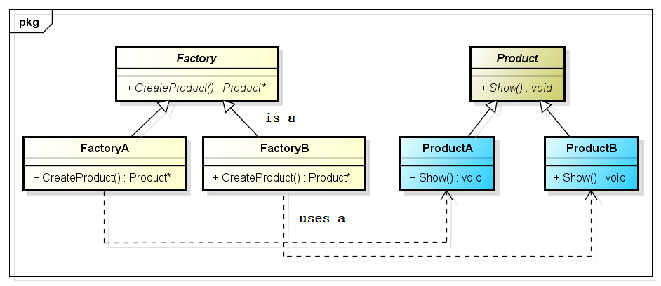

工厂方法模式
1 问题描述
之前讲到了C++设计模式——简单工厂模式，由于简单工厂模式的局限性，比如：工厂现在能生产ProductA、ProductB和ProductC三种产品了，此时，需要增加生产ProductD产品；那么，首先是不是需要在产品枚举类型中添加新的产品类型标识，然后，修改Factory类中的switch结构代码。是的，这种对代码的修改，对原有代码的改动量较大，易产生编码上的错误（虽然很简单，如果工程大了，出错也是在所难免的！！！）。这种对代码的修改是最原始，最野蛮的修改，本质上不能称之为对代码的扩展。同时，由于对已经存在的函数进行了修改，那么以前进行过的测试，都将是无效的，所有的测试，都将需要重新进行，所有的代码都需要进行重新覆盖。这种，增加成本，不能提高效率的事情，在公司是绝对不允许的（除非昏庸的PM）。出于种种原因，简单工厂模式，在实际项目中使用的较少。那么该怎么办？怎么办呢？需要对原有代码影响降到最小，同时能对原有功能进行扩展。
2 UML类图
那么今天介绍的工厂方法模式，就隆重登场了。它只是对简单工厂模式的扩展，在GOF的介绍中，它们是合并在一起的，而我则是单独分开进行讲解的，就是为了区分二者的利弊，便于大家在实际项目中进行更好的把握与应用。工厂方法模式是在简单工厂模式的基础上，对“工厂”添加了一个抽象层。将工厂共同的动作抽象出来，作为抽象类，而具体的行为由子类本身去实现，让子类去决定生产什么样的产品。
如图，FactoryA专心负责生产ProductA，FactoryB专心负责生产ProductB，FactoryA和FactoryB之间没有关系；如果到了后期，如果需要生产ProductC时，我们则可以创建一个FactoryC工厂类，该类专心负责生产ProductC类产品。由于FactoryA、FactoryB和FactoryC之间没有关系，当加入FactoryC加入时，对FactoryA和FactoryB的工作没有产生任何影响，那么对代码进行测试时，只需要单独对FactoryC和ProductC进行单元测试，而FactoryA和FactoryB则不用进行测试，则可省去大量无趣无味的测试工作。
3 适用场合
工厂方法模式的意义是定义一个创建产品对象的工厂接口，将实际创建工作推迟到子类当中。核心工厂类不再负责产品的创建，这样核心类成为一个抽象工厂角色，仅负责具体工厂子类必须实现的接口，这样进一步抽象化的好处是使得工厂方法模式可以使系统在不修改具体工厂角色的情况下引进新的产品。
在设计的初期，就考虑到产品在后期会进行扩展的情况下，可以使用工厂方法模式；
产品结构较复杂的情况下，可以使用工厂方法模式；
由于使用设计模式是在详细设计时，就需要进行定夺的，所以，需要权衡多方面的因素，而不能为了使用设计模式而使用设计模式。
4 代码实现

1 #include <iostream> 2 using namespace std; 3 4 class Product 5 { 6 public: 7 virtual void Show() = 0; 8 }; 9 10 class ProductA : public Product 11 { 12 public: 13 void Show() 14 { 15 cout<< "I'm ProductA"<<endl; 16 } 17 }; 18 19 class ProductB : public Product 20 { 21 public: 22 void Show() 23 { 24 cout<< "I'm ProductB"<<endl; 25 } 26 }; 27 28 class Factory 29 { 30 public: 31 virtual Product *CreateProduct() = 0; 32 }; 33 34 class FactoryA : public Factory 35 { 36 public: 37 Product *CreateProduct() 38 { 39 return new ProductA (); 40 } 41 }; 42 43 class FactoryB : public Factory 44 { 45 public: 46 Product *CreateProduct() 47 { 48 return new ProductB (); 49 } 50 }; 51 52 int main(int argc , char *argv []) 53 { 54 Factory *factoryA = new FactoryA (); 55 Product *productA = factoryA->CreateProduct(); 56 productA->Show(); 57 58 Factory *factoryB = new FactoryB (); 59 Product *productB = factoryB->CreateProduct(); 60 productB->Show(); 61 62 if (factoryA != NULL) 63 { 64 delete factoryA; 65 factoryA = NULL; 66 } 67 68 if (productA != NULL) 69 { 70 delete productA; 71 productA = NULL; 72 } 73 74 if (factoryB != NULL) 75 { 76 delete factoryB; 77 factoryB = NULL; 78 } 79 80 if (productB != NULL) 81 { 82 delete productB; 83 productB = NULL; 84 } 85 return 0; 86 }
output:
I'm ProductA I'm ProductB
本页共12段，1318个字符，3266 Byte(字节)